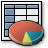

1. Definición y programas
Importante
También permite la creación de gráficos estadísticos, informes, clasificaciones de datos, incluso pequeñas bases de datos.
Aunque hubo algunos intentos en la década de los 70, el origen de la hoja de cálculo data de 1979, cuando Dan Bricklin y Bob Frankston crearon el VisiCalc (Calculadora Visual).
Fue una herramienta muy importante ya que hizo que el PC se comenzará a ver como un instrumento de trabajo en el mundo empresarial y comercial.

|
Microsoft Excel, incluido en Microsoft Office |
Numbers, incluido en iWork de Apple |
||
|
OpenCal, incluido en OpenOffice.org |
KSpread, del paquete KOffice |
||
|
IBM/Lotus 1-2-3, del paquete SmartSuite |
Gnumeric, incluido en Gnome Office |

|
Ejercicio resuelto
Para saber más
Internet ofrece nuevas posibilidades para todo lo relacionado con las TIC y no iba a ser menos para el trabajo con hojas de cálculo. Aunque existen varias en la red, te mostramos un ejemplo con Google Spreadsheets, incluido en las utilidades de Google Docs.
Es una hoja de cálculo online, que permite crear o importar documentos, compartirlos con otros usuarios y modificarlos simultáneamente. Los documentos generados se guardan de forma online. Esta aplicación se creó en el año 2006 y actualmente se ha adaptado para poder ser utilizada en telefonía móvil.
Obra publicada con Licencia Creative Commons Reconocimiento No comercial Compartir igual 4.0